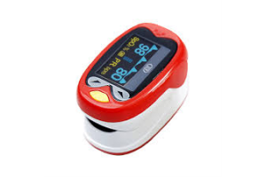

Oximetro de pulso serve para verificar a saturação e frequência cardiaca,
Preço R$79,99

Oximetro de pulso serve para verificar a saturação e frequência cardiaca,
Oximetro de pulso serve para verificar a saturação e frequência cardiaca,
Preço R$49,99
Oximetro de pulso serve para verificar a saturação e frequência cardiaca,
Preço R$81,97